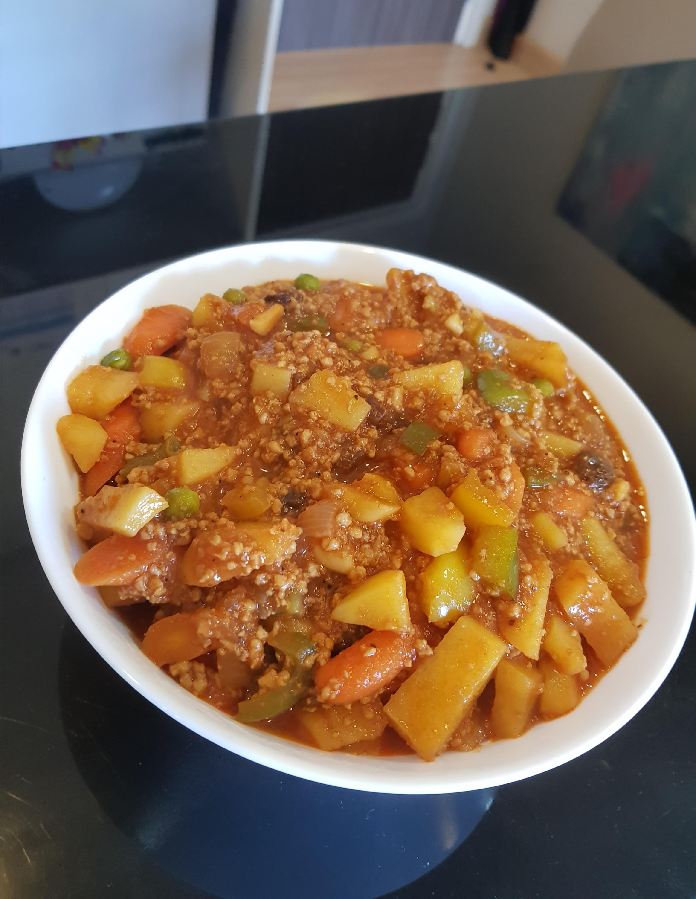

Filipino Style Giniling (Afritada Style)

This dish is one of my favorites to eat. It's a comfort food for me, and I love it. This is my own personal way of making this.
It's pretty easy to make and does not take long all. This dish is a Philippine dish, and it is usually eaten with white rice. Contrary to the picture, you will not add peas.
Time Needed:
Prep: 25 mins
Cook: 15 mins
Total: 40 mins
Servings: 6
Yield: 6 serving
Ingredients
- 1 tablespoon oil, or as needed
- 1 clove garlic, minced
- 2 pounds ground beef
- 1 cups water, or as needed
- ground black pepper to taste
- ⅓ cup and ½ tablespoon and ½ teaspoon soy sauce, divided
- 2 medium red potatoes
- 10 baby carrots, or more to taste, cubed
- ½ cup raisins, or more to taste
- 2 (6.5 ounce) cans tomato sauce with salt (such as Contadina®)
- ½ orange bell pepper, diced
- ¼ cup white sugar